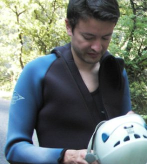
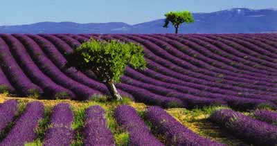
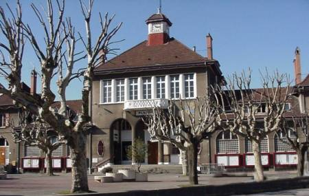

about me
 Software:
Software:
Torta
Karmack
Plata
FUmanchu!
Rants:
AboutMe
Blogging
El origen del hombre americano
Propositos2006
Propositos2007
SWFing
Pictures:
Sicilia -
thumbs
Visita Dimo 2007 -
thumbs
Tokyo -
thumbs
Barcelona -
thumbs
Lisbon -
thumbs
Gilberto Gil -
thumbs
Visita Fidel -
thumbs
Hiver -
thumbs
Dogs -
thumbs
Italy -
thumbs
Eurockeennes -
thumbs
Grenoble -
thumbs
Chipie -
thumbs
Place aux Herbes -
thumbs
Eek Friends:
 Alejo Alejo
Javier
Nelson
Old Posts:
Archive
Created with:
emacs
bash
libXSLT


 Dimo's Art
Quebec Hispano
Dimo's Art
Quebec Hispano
|
|
2006 - July |
EL jueves pasado fuí con mis colegas del laboratorio a hacer canyoning. Se trata de descender un trayecto de un riachuelo que pasa por el medio de un cañon, usando distintas técnicas como saltar, nadar y bajar en rappel. Como todos eramos nulos en el asunto (excepto mi jefe, quien hasta libros al respecto ha escrito) el trayecto escogido era mucho más lúdico que técnico. A pesar de todo, había varios saltos y bajadas asustadoras. Aquí hay una description del cañon al que fuimos (la parte 1 del recorrido, la más dificil, no la hicimos).

"I get all the news I need on the weather report"
Sobra decir que el viernes tenía todos los musculos adoloridos.
Este post de Gabriel me gustó..
Despues del espectaculo de la rapiña burocrática orquestada por Uribe para conservar sus coaliciones... hay aún alguién que crea que Alvaro Uribe representa realmente algún cambio fundamental en la manera en que se ha gobernado a Colombia desde siempre? A ese respecto, esta columna de Daniel Samper me pareció buena.
El martes empiezo a trabajar.
|
|
|
Puede que usted este visitando aun la direccion evilrobot.free.fr para consultar este blog. Por favor, use http://www.crazyrobot.net que es la version oficial. evilrobot.free.fr no esta siendo actualizado.
|
|
El concurso de programación del ICFP estuvo realmente espectacular. Este año, CMU planeó una de las competiciones de programación mas interesantes, emocionantes y divertidas que ha habido. El concurso comenzaba con la descripcion de un computador encontrada en antiguos pergaminos de una civilizacion perdida, asi como un programa listo para correr en esa máquina. La descripción correspondía a una máquina muy sencilla, con solo 13 instrucciones de 32 bits. Alejo programó un emulador de dicha máquina en C. Al cabo de unas cuantas horas pudimos correr los misteriosos programas que incluían una especie de sistema operativo (UMIX :P), sobre el cual se podía correr un interprete de basic, un interprete de un programa "gráfico" de circuitos, y varios otros programas complicados, todos ellos corriendo sobre el emulador en C de Alejo de una maquina sencilla de 13 instrucciones! Al "loguearse" en UMIX, diferentes acertijos iban apareciendo. Los problemas eran de diferentes dificultades, pero todos interesantes.

Provence
Debo decir que solo el primer día del concurso aporté puntos al equipo, el resto del tiempo no resolví nada :(. Quede estancado en un problema, con la frustración de que muchos otros equipos lo resolvieron. Como dijo Alejo, la manera de abordar el ICFP es con la intención de divertirse: desde ese punto de vista la participación fue un éxito. En cuanto a puntos, cuando dejaron de anunciarse las posiciones, ibamos de puesto 49 lo cual es bastante positivo. Seguramente perderemos posiciones en la final, ya que no sumamos casi puntos el último día.
Pasando a otro tema, he notado que en la publicidad francesa hay una imagen recurrente: una casa grande en ambiente campestre, durante un día soleado que evoca el sur de Francia. Al frente de la casa, una mesa de madera, y un grupo de gente (familia o amigos), comiendo algo y tomando vino. Notese que esta imagen aparece en diversos temas, no solo en propagandas de comida. Creo que esa es una imagen muy representativa de lo que es la felicidad para muchos franceses.

Alcaldia de Echirolles
Hace unos días firmé por primera vez en mi vida un contrato a termino indefinido. Será este el primer paso hacia la realización de la profesía lanzada por el profeta de Pivijai, según la cual yo terminaré viviendo en un apartamentico de la banlieu grenoblina y conduciendo un peugeot 306 de segunda?
|
|
|
Hay una cosa sobre la que, estoy seguro, todos los lectores de este blog estaran de acuerdo: lanzar misiles indiscriminadamente sobre ciudades israelies es criminal e intolerable. El punto de controversia que aparece con la situacion en el medio oriente es: es aceptable la respuesta del gobierno de Israel al ataque del hezbollah, el cual causo varios civiles heridos, 5 soldados muertos y el secuestro de dos de sus soldados? Creo que la respuesta del gobierno israeli lleva mas de 200 muertos civiles, que seguro no tenian nada que ver con las acciones del hezbollah.
Una declaracion de Noam Chomsky, John Berger, Jose Saramago y Harold Pinter sobre la situacion en el medio oriente aqui.
|
|
|
Spyware: In the field of computing, the term spyware refers to a broad category of malicious software designed to intercept or take partial control of a computer's operation without the informed consent of that machine's owner or legitimate user. While the term taken literally suggests software that surreptitiously monitors the user, it has come to refer more broadly to software that subverts the computer's operation for the benefit of a third party.
Me saca el mal genio que La Blogoteca use un sistema mas bien deshonesto para inflar sus estadisticas en Blogalaxia y asi ganar visibilidad sobre otros blogs o comunidades de blogs. Aqui explicamos el truco. Por favor, que la competencia sea franca!
|
|
|
Mucho calor y pocas buenas noticias hacen lento lo de la blogueadera. Zidane demostró lo decepcionante que es seguirle la cuerda a los medios cuando deciden glorificar a alguién y convertirlo en un ídolo. En este año de copa mundial no se ha hablado casi del tour de France, ni aún con el escandalo de dopaje, otro ejemplo de los limites absurdos a los que puede hacer llegar la filosofía de la ultra-competencia en el deporte profesional.
Redactar una tesis a 35 grados centigrados es una jartera. No recomiendo la experiencia. Es mejor redactar en invierno, cuando además no hay ninguna otra cosa que hacer.
|
|
|

 Save this post]
Save this post]